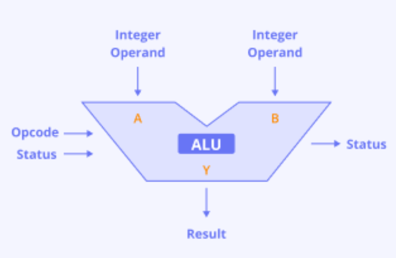
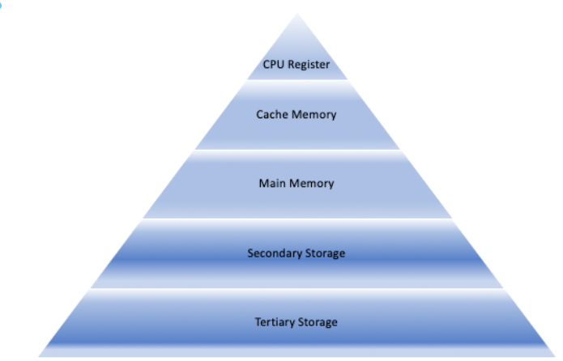
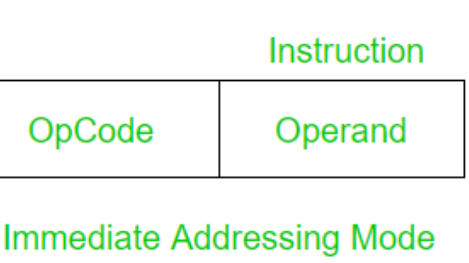
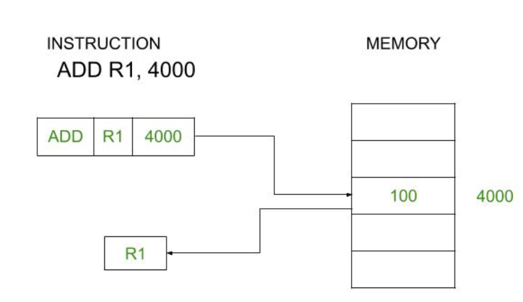
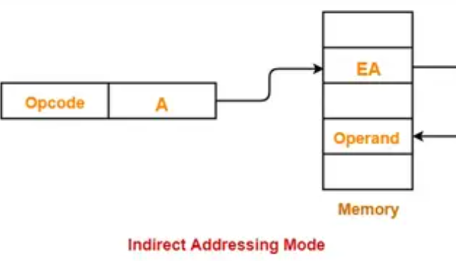
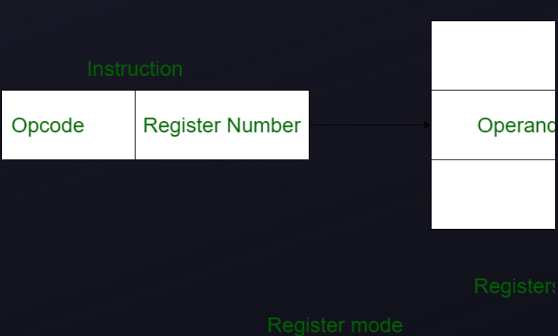
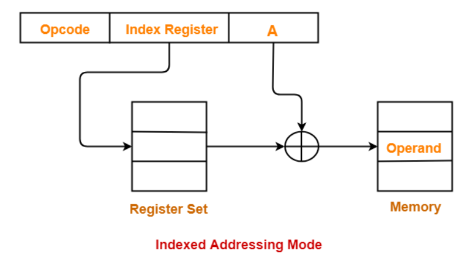
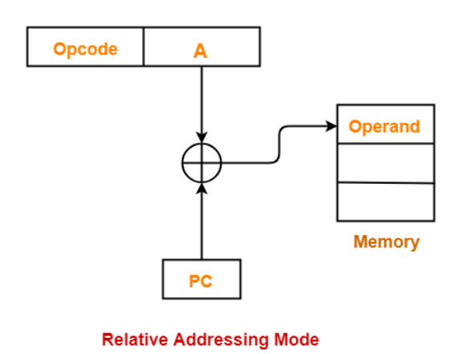
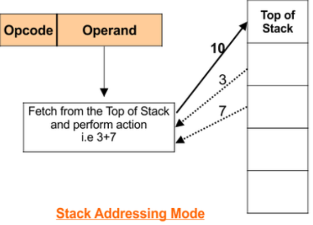

Processors
Processor Module Design
N bit Arithmetic and logic unit
Performs Arithmetic and Logical operations on data.
What is an ALU?
The Arithmetic Logic Unit (ALU) is a crucial component of a computer's central processing unit (CPU). It performs arithmetic (addition, subtraction, multiplication, division) and logical (AND, OR, NOT, XOR) operations on integer binary numbers. The ALU handles various operations that are essential for computing tasks, making it an integral part of any processor architecture.
• Arithmetic Operations: Includes basic mathematical operations such as addition, subtraction, multiplication, and division.
• Logical Operations: Includes operations that compare and manipulate data, such as AND, OR, XOR, NOT, etc.

8 Bit ALU
An 8-bit ALU (Arithmetic and Logic Unit) processes 8-bit operands and performs a variety of logical and arithmetic operations. For logical operations, it utilizes basic logic gates, such as AND, OR, NOT, XOR, NAND, and NOR, to manipulate the bits of the input operands. These operations are fundamental for decision-making processes in computing, such as comparison and conditional branching.
For arithmetic operations, the ALU relies on supporting components like an adder for addition, a subtractor for subtraction, and in some cases, specialized circuits for multiplication and division. These arithmetic functions enable the ALU to perform essential calculations necessary for tasks such as number processing and data manipulation.
Additionally, the 8-bit ALU is capable of various shift operations, which modify the position of bits within the operand. These include left shift and right shift, which move bits in their respective directions while filling the vacated positions with zeros. It also supports left rotate and right rotate, where the shifted-out bits are reintroduced at the opposite end of the operand, effectively performing a circular shift. These operations are commonly used in bitwise manipulation tasks, such as adjusting values, optimizing storage, or implementing algorithms like encryption.

Memory
Stores Data and Instruction required by the CPU.
Know More
Memory
In computer systems, memory generally refers to Random Access Memory (RAM), which is used to temporarily store data that is actively being used ar processed by the system. RAM is capable of storing and retrieving n-bits of data, where "n" indicates the bit width of the system's memory operations (eg, 8-bit, 16-bit, 32-bit, etc.). When data is input into the system, it is assigned a unique memory address. Each memory location in RAM can hold a specific number of bits of data, and the R/W (Read/Write) control signal determines whether data is being read from or written to a particular memory address. This ability to access any location directly (hence "random access") is what distinguishes RAM from other types of memory like sequential storage devices (eg, hard drives or tapes), which require data to be accessed in a fixed order.
Memory hierarchy
Memory hierarchy is a concept in computer architecture that organizes memory storage based on various characteristics such as access speed, size, and cost. The idea is to provide fast access to the most frequently used data while managing larger, slower storage devices for less frequently used information. Memory hierarchy structures typically have multiple levels, each offering different trade-offs in terms of response time, capacity, and cost.
These levels are organized from the fastest, smallest, and most expensive memory at the top, to the slowest, largest, and cheapest memory at the bottom.

Register File
Hols Immediate data during computation.
Know More
Register
A register file is a small, high-speed memory component within the Central Processing Unit (CPU) that stores temporary data, known as registers, which are used during the execution of instructions. Registers are essential for fast data processing, providing the CPU with immediate access to frequently used values like operands and intermediate results. Unlike non-volatile memory, registers are volatile, meaning their contents are lost when power is turned off. The register file is typically made up of a limited number of registers, which vary depending on the architecture of the processor, and is designed to allow the CPU to access and modify data with minimal delay, often in a single clock cycle.
Key Characteristics:
• Small Size: Register files contain a limited number of registers, such as 32 or 64, designed to hold essential data for the CPU.
• Volatile: Data in registers is temporary and is erased when the power is turned off or the system is reset.
• Fast Access: Registers can be accessed extremely quickly, typically within a single CPU clock cycle, enabling rapid data processing.
Special Function Register
Stores Controls Flags for Processor Operations.
Know More
Special Function Register
SRF typically stands for Special Registers File, which refers to a set of registers within a processor or microcontroller that are dedicated to controlling specific hardware functions and system configurations. Unlike general-purpose registers used for regular data manipulation during program execution, SREs handle specialized tasks such as managing VO operations, controlling timers, handling interrupts, and configuring communication protocols like WART, SPI, or IC. These registers are crucial for managing the interaction between the software and the underlying hardware components. They are often located at specific memory addresses, distinct from the general-purpose registers, and are mapped to control hardware features.
Key Characteristics:
• Dedicated Functionality: SRFs control hardware features such as GPIO (General Purpose I/O), timers, serial communication (UART, SPI, I20), and interrupt handling, making them vital for embedded systems and low-level programming.
• Fixed Memory Location: SRFs have fixed addresses within the system's memory map, allowing the CPU to access them directly for specific control operations.
• Volatile Nature: The contents of SRFs are typically volatile, meaning they are cleared when the power is turned off or reset.
• Fast and Direct Access: The CPU can access SRFs with minimal delay, making them efficient for real-time hardware control.
Processor Status Word
Contains Flags that Indicate the Contain Current State of the Processor.
Know More
Processor Status Word
The Processor Status Word (PSW) is a critical register in a processor that holds flags and control bits which provide vital information about the processor's current state during program execution. The PSW contains several key status flags, such as the Zero Flag (indicating whether the result of an operation is zero), the Carry Flag (indicating if there was a carry or borrow in arithmetic operations), the Sign Flag (showing if the result is negative), and the Overflow Flag (indicating an overflow in signed operations). Additionally, it includes control bits that manage the processor's operations, such as enabling or disabling interrupts and determining the current processor mode (e.g., user mode or supervisor mode). The PSW is essential for decision-making in program control, as it allows conditional instructions to execute based on the status flags, and it is critical during context switching in multitasking systems, as it preserves the processor's state. By providing this status information, the PSW ensures that the processor can handle branching, interrupts, and operations correctly, allowing for smooth and accurate program execution.
Key Characteristics:
• Context Switching: Saves and restores processor state during multitasking.
• Program Control: Affects execution flow, enabling conditional branching and interrupt handling.
Processors
Processor Module Integration
Instruction Format
Defines how Instructions are Structured for different Addressing modes.
Know More
Instruction Format
In computer architecture, an instruction format defines the layout and structure of an instruction that the processor can understand and execute. The format depends on the addressing mode used, as the addressing mode determines how the operand of the instruction is accessed (i.e, where the data for the operation is located). Different addressing modes specify how the operand is determined and can involve various fields in the instruction, such as the opcode, operand address, and immediate values.
1. Immediate Addressing Mode
In this mode, the operand is directly specified as part of the instruction. The operand is a constant value or immediate data that is used in the operation.
Instruction Format:
• Opcode: The operation to be performed (e.g., ADD, SUB).
• Immediate Operand: The constant value (immediate data) used by the instruction.
• Opcode | Operand (Immediate Data)
• MOV R1, #5 (Move the immediate value 5 into register R1)

2. Direct Addressing Mode
In this mode, the operand's address is directly specified in the instruction. The operand is located at the memory address provided.
Instruction Format:
• Opcode: The operation to be performed.
• Direct Address: The memory address where the operand is stored.
• Opcode | Direct Address
• MOV R1, 400 (Move the content of memory address 400 into register R1)

3. Indirect Addressing Mode
In this mode, the instruction specifies a memory address that contains the actual address of the operand. In other words, the address of the operand is stored in memory, and the instruction fetches that address to access the operand Instruction Format:
• Opcode: The operation to be performed.
• Pointer Address: The memory address of a pointer, which points to the operand's actual address.
• Opcode | Pointer Address
• MOV R1, [R2] (Move the content of the memory address stored in R2 into R1)

4. Register Addressing Mode
In this mode, the operand is a register. The instruction specifies which register to use, and the operand is the content of that register.
Instruction Format:
• Opcode: The operation to be performed.
• Register Address: The register whose value is used as the operand.
• Opcode | Register Address
• ADD R1 (Add the contents of register R2 to register R1)

5. Register Indirect Addressing Mode
In this mode, the operand is located at the address stored in a register. The register holds the effective address where the operand resides.
Instruction Format:
• Opcode: The operation to be performed.
• Register Address: The register containing the address of the operand
• Opcode | Register Address
• MOV R1, IR2] (Move the content of the memory address stored in R2 into R1)
6. Indexed Addressing Mode
In Indexed Addressing Mode, the operand's address is determined by adding a constant value (index) to the base address stored in a register. This mode is typically used for accessing array elements or specific memory locations.
Instruction Format:
• Opcode | Base Address + Index Value
• MOV R1, [R2 + 100] (Move the content of the memory address R2 + 100* into R1)

7. Relative Addressing Mode
In Relative Addressing Mode, the operand's address is determined by adding an offset (or displacement) to the current program counter (PC. This is commonly used for branching operations.
Instruction Format:
• Opcode: The operation to be performed (e.g., JMP, CALL).
• Offset A constant value that is added to the current program counter to calculate the target address (e.g., +4).
• Opcode | Offset
• JMP +4 (Jump to the memory address PC + 4)

8. Stack Addressing Mode
In Stack Addressing Mode, operands are accessed from the stack, which is a last-in, first-out (LIFO) structure. The stack is typically used for temporary storage of data, such as function calls or local variables.
Instruction Format:
• Opcode: The operation to be performed (e.g., PUSH, POP).
• Stack Pointer: The pointer to the top of the stack (eg., SP).
• Opcode | Stack Pointer
• PUSH R1 (Push the value in R1 onto the stack)
• POP R2 (Pop the value from the stack into R2)

Course Project
Know More